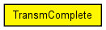

Timer to indicate a completely received frame
This message class is used within BasicSnrEval to indicate that an AirFrame is completely received. It has no parameters and was only introduced to differentiate this timer from other self messages
This component has been taken over from Mobility Framework 1.0a5.
Author: Daniel Willkomm
The following diagram shows usage relationships between types. Unresolved types are missing from the diagram. Click here to see the full picture.
The following diagram shows inheritance relationships for this type. Unresolved types are missing from the diagram. Click here to see the full picture.
// // Timer to indicate a completely received frame // // This message class is used within BasicSnrEval to indicate that an // AirFrame is completely received. It has no parameters and was only // introduced to differentiate this timer from other self messages // // This component has been taken over from Mobility Framework 1.0a5. // // @author Daniel Willkomm // packet TransmComplete { }